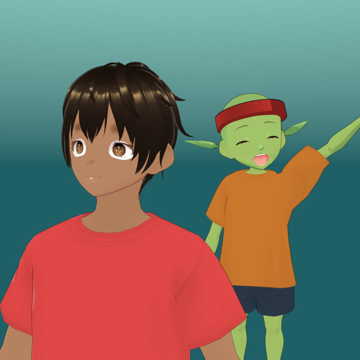

A gente garimpa. Você escolhe.
O Outro Mundo Otaku é um projeto brasileiro de quem gosta de anime. Toda semana a gente procura na Shopee os produtos de anime que mais estão saindo e junta tudo num lugar só, com preço, quantidade vendida e link direto. Sem você ter que rolar mil páginas.

O que a gente faz
Três coisas, bem feitas.
Garimpo toda semana
A lista é refeita com os produtos de anime mais vendidos do momento: action figures, chaveiros, camisetas, mangás, decoração e cosplay.
Preço e vendas à vista
Cada achadinho mostra o preço, o desconto e quantos já foram vendidos, com a data em que a gente conferiu.
Link direto para a Shopee
O botão leva para a página do produto na Shopee. Lá você vê fotos, avaliações e escolhe a variação antes de comprar.
Transparência
O que você precisa saber antes de comprar.
Somos afiliados da Shopee
Quando você compra por um link daqui, a Shopee nos paga uma pequena comissão pela indicação. O preço para você é exatamente o mesmo.
Quem vende e entrega é a loja
Pagamento, entrega, troca e devolução acontecem dentro da Shopee, com as regras e a garantia dela. A gente não recebe seu pagamento nem seus dados.
Como escolhemos
Pelo que mais vende na Shopee e por ser mesmo de anime. A gente não testa cada produto: antes de comprar, leia as avaliações e as fotos de quem já comprou.
Licenciado ou não?
Muitos produtos são inspirados nos animes e não são licenciados pelos estúdios. Se você quer o oficial, confira a descrição e a loja na Shopee.

E a gente também faz anime
Morri Segurando uma Laje e Acordei em Outro Mundo
Em 2080, no meio de um tornado, o Rafa segura uma marquise para duas senhoras escaparem e morre. Acorda num altar, venerado como deus por um povo frágil, num mundo de reinos em guerra, demônios e anjos. Ele é pacifista e vira protetor de quem precisa.
Os episódios são curtos, feitos aqui no Brasil e publicados no Instagram. Quem decide os rumos da história é o público, nos comentários.
Acompanhar no InstagramPerguntas frequentes
Vocês vendem os produtos?
Não. A gente indica produtos de lojas da Shopee. A compra, o pagamento e a entrega são feitos pela Shopee e pela loja que vende.
É seguro comprar pelo link de vocês?
O link abre a página oficial do produto na Shopee (o endereço começa com s.shopee.com.br e vai para shopee.com.br). Você paga dentro da Shopee, como sempre. Desconfie de qualquer pessoa que peça pagamento por fora.
Pago mais caro comprando por aqui?
Não. O preço é o mesmo. A comissão sai da Shopee, não do seu bolso.
O preço da loja está diferente do que aparece aqui.
Preço e estoque mudam rápido. A gente mostra o valor do dia em que conferiu; o que vale é sempre o que aparece na Shopee na hora da compra.
Os produtos são originais?
Depende da loja. Muitos são inspirados nos animes e não são licenciados. Confira a descrição, a loja e as avaliações antes de comprar.
Posso sugerir um produto?
Pode e deve. Manda no WhatsApp ou no Instagram o que você está procurando que a gente garimpa.
Fale com a gente
Dúvida, sugestão ou parceria.